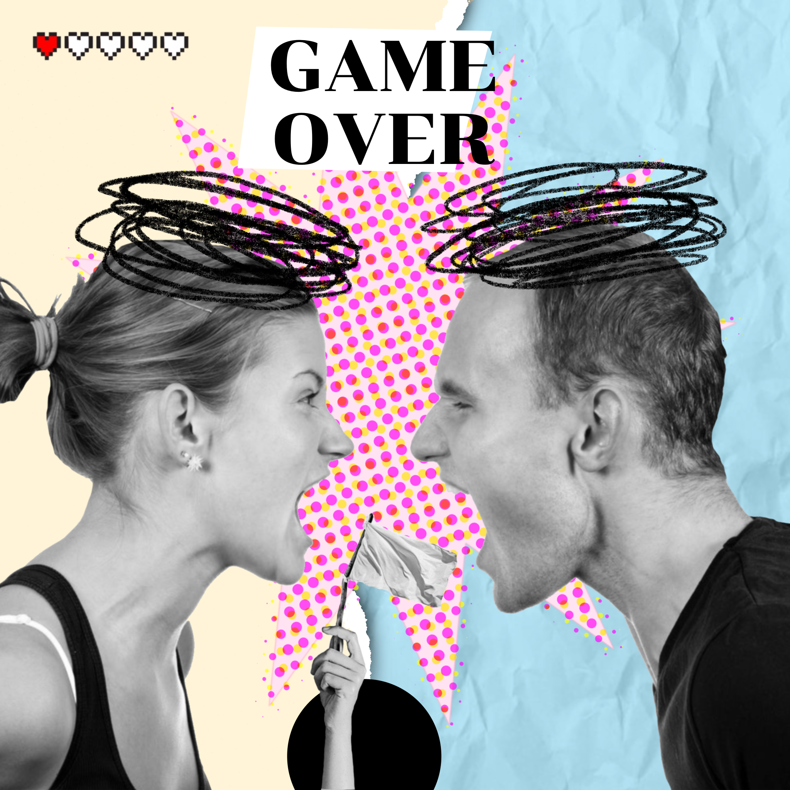

Toxic relationships
Toxic relationships คือ ความสัมพันธ์ที่ไม่สร้างผลดีให้กับฝ่ายใดฝ่ายหนึ่ง หรืออาจจะทั้ง
สองฝ่าย เกิดภาวะบั่นทอน เบื่อหน่าย และอาจจะร้ายแรงไปจนถึงการทำร้ายกันทั้งทางร่างกายและ
จิตใจ ผลที่อาจเกิดขึ้นจากความสัมพันธ์ที่เป็นพิษคือผลที่ส่งไปสู่ความสัมพันธ์อื่น ๆ ที่อาจถูกบั่นทอนลง
ภาวะความเจ็บปวดทั้งร่างกายและจิตใจที่อาจส่งผลต่อการใช้ชีวิตในอนาคต